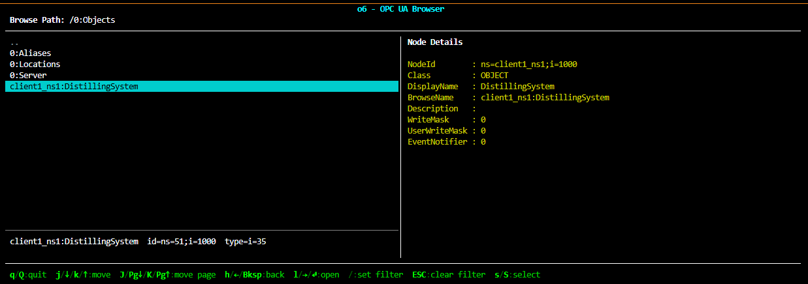

Interactive Address-Space Browser¶
Walks the server's address space from a terminal using the high-level
Client.browseInteractive() helper. The browser is a terminal
UI: arrow keys (or h/j/k/l) move through the children of
the current node, Enter drills into a child, h / Backspace
goes back up the tree, / filters children by a fuzzy substring
match, and q quits.
browseInteractive() is the only entry point. When the user quits
with Enter on a child, a small dialog asks whether to return the
NodeId of the selected node or a BrowsePath slash-delimited
string. browseInteractive() then returns that string. The return
value is the part of the API a script can plug into a follow-up
client.read(returned_string) call without re-walking the tree.

The example targets basic_server.py so start that script in one
terminal, then run this one. browseInteractive() requires the
standard-library curses module (on Windows, install
windows-curses).
The interactive browser is a wrapper around the same Browse
service that client.browse() and client[NodeId] use. It
just caches the result in an UI instead of returning Python objects.
1. Endpoint and starting node¶
The endpoint URL matches the convention used by every other example
in this directory. The starting NodeId is optional: when omitted
the browser opens at the root (i=0). Pass any NodeId as a
CLI argument to start somewhere else — for example the Objects
folder "i=85", a specific sensor on basic_server.py like
"ns=1;i=1001", or any other node you want to inspect.
localhost = "localhost"
endpoint_url = f"opc.tcp://{localhost}:4840"
start_nodeid: str | None = None
if len(sys.argv) > 1:
start_nodeid = sys.argv[1]
print(f"Starting browser at {start_nodeid}")
else:
print("Starting browser at the address-space root (pass a NodeId to start elsewhere)")
2. Connect and launch the browser¶
The browser takes over the terminal until the user quits, so we
connect first, run the browser inside a with block, and let
__exit__ tear down the session. A StatusCodeError from
connect() (server down, wrong URL, auth rejected) is caught
and reported; once the session is open, browseInteractive
owns the terminal and any further exceptions bubble out of the
with block.
The function returns a string (either a NodeId like
"ns=1;i=1001" or a BrowsePath like
"/Objects/Plant/Temperature") depending on what the user
chose in the quit dialog. The example prints it so the script can
be used as a "find me a NodeId" tool from the shell.
try:
with Client(endpoint_url) as client:
result = client.browseInteractive(start_nodeid)
if result is not None:
print(f"\nSelected: {result}")
except StatusCodeError as e:
print(f"Failed to connect: {e.symbol} (0x{e.code:08x})")
sys.exit(1)
3. Key bindings¶
The browser's input mode is NAV by default; typing /
switches to FILTER mode and the keystrokes get a different
meaning. The full set of bindings is shown in the browser's
built-in ? help screen, but the essentials are:
| key | action |
|---|---|
j / Down |
move down one row |
k / Up |
move up one row |
J / Page Down |
move down one page |
K / Page Up |
move up one page |
h / Left / Backspace |
go back to the parent |
l / Right / Enter |
drill into the highlighted child |
/ |
start a fuzzy filter on the child list |
? |
show the help screen |
q |
quit (returns None) |
The "drill into" action opens a modal dialog with three options: return the NodeId, return a BrowsePath, or cancel.
Complete Source Code¶
#!/usr/bin/env python3
# Copyright 2026 (c) o6 Automation GmbH
"""
Interactive Address-Space Browser
=================================
Walks the server's address space from a terminal using the high-level
``Client.browseInteractive()`` helper. The browser is a terminal
UI: arrow keys (or ``h/j/k/l``) move through the children of
the current node, ``Enter`` drills into a child, ``h`` / ``Backspace``
goes back up the tree, ``/`` filters children by a fuzzy substring
match, and ``q`` quits.
``browseInteractive()`` is the only entry point. When the user quits
with ``Enter`` on a child, a small dialog asks whether to return the
**NodeId** of the selected node or a **BrowsePath** slash-delimited
string. ``browseInteractive()`` then returns that string. The return
value is the part of the API a script can plug into a follow-up
``client.read(returned_string)`` call without re-walking the tree.

The example targets ``basic_server.py`` so start that script in one
terminal, then run this one. ``browseInteractive()`` requires the
standard-library ``curses`` module (on Windows, install
``windows-curses``).
"""
import socket
import sys
import o6
from o6 import Client, StatusCodeError
localhost = "localhost"
endpoint_url = f"opc.tcp://{localhost}:4840"
start_nodeid: str | None = None
if len(sys.argv) > 1:
start_nodeid = sys.argv[1]
print(f"Starting browser at {start_nodeid}")
else:
print("Starting browser at the address-space root (pass a NodeId to start elsewhere)")
try:
with Client(endpoint_url) as client:
result = client.browseInteractive(start_nodeid)
if result is not None:
print(f"\nSelected: {result}")
except StatusCodeError as e:
print(f"Failed to connect: {e.symbol} (0x{e.code:08x})")
sys.exit(1)